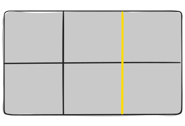

Introduction
CSS Grid Layout is the most powerful layout system available in CSS. It is a 2-dimensional system, meaning it can handle both columns and rows, unlike flexbox which is largely a 1-dimensional system. You work with Grid Layout by applying CSS rules both to a parent element (which becomes the Grid Container) and to that element’s children (which become Grid Items).
CSS Grid Layout (aka “Grid”), is a two-dimensional grid-based layout system that aims to do nothing less than completely change the way we design grid-based user interfaces. CSS has always been used to lay out our web pages, but it’s never done a very good job of it. First, we used tables, then floats, positioning and inline-block, but all of these methods were essentially hacks and left out a lot of important functionality (vertical centering, for instance).
Flexbox helped out, but it’s intended for simpler one-dimensional layouts, not complex two-dimensional ones (Flexbox and Grid actually work very well together). Grid is the very first CSS module created specifically to solve the layout problems we’ve all been hacking our way around for as long as we’ve been making websites.
Basics and Browser Support
As of March 2017, most browsers shipped native, unprefixed support for CSS Grid: Chrome (including on Android), Firefox, Safari (including on iOS), and Opera. Internet Explorer 10 and 11 on the other hand support it, but it’s an old implementation with an outdated syntax. The time to build with grid is now!
To get started you have to define a container element as a grid with display: grid, set the column and row sizes with grid-template-columns and grid-template-rows, and then place its child elements into the grid with grid-column and grid-row.
This browser support data is from Caniuse , which has more detail. A number indicates that browser supports the feature at that version and up.

Important Terminology
Before diving into the concepts of Grid it’s important to understand the terminology. Since the terms involved here are all kinda conceptually similar, it’s easy to confuse them with one another if you don’t first memorize their meanings defined by the Grid specification. But don’t worry, there aren’t many of them.
Grid Container
The element on which display: grid is applied. It’s the direct parent of all the grid items. In this example container is the grid container.
Grid Item
The children (i.e. direct descendants) of the grid container. Here the item elements are grid items, but sub-item isn’t.
Grid Line
The dividing lines that make up the structure of the grid. They can be either vertical (“column grid lines”) or horizontal (“row grid lines”) and reside on either side of a row or column. Here the yellow line is an example of a column grid line.
Grid Cell
The space between two adjacent row and two adjacent column grid lines. It’s a single “unit” of the grid. Here’s the grid cell between row grid lines 1 and 2, and column grid lines 2 and 3.

Grid Track
The space between two adjacent grid lines. You can think of them like the columns or rows of the grid. Here’s the grid track between the second and third row grid lines.

Grid Area
The total space surrounded by four grid lines. A grid area may be composed of any number of grid cells. Here’s the grid area between row grid lines 1 and 3, and column grid lines 1 and 3.